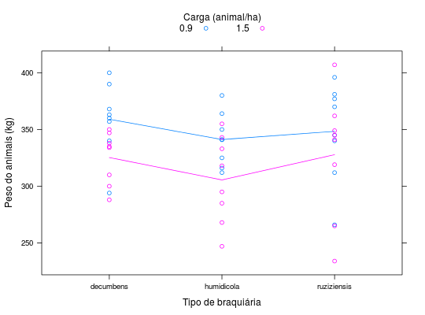

Experimento fatorial que avaliou 2 cargas animais \(\times\) 3 espécies de braquiária, com 2 blocos casualizados e 8 grupos de novilhos, adaptados do artigo de Pimentel-Gomes et al. (1988).
Um data.frame com 48 observações e 5 variáveis, em que
blocgrupocargabraquiariapesoPIMENTEL-GOMES (2009), Tabela 14.7.1, pág. 283.
Pimentel-Gomes, F.; Nunes, S. G.; Gomes, M. de B; Curvo, J. B. E. Modificação na análise de variância de ensaions de pastejo com bovinos, considerando os blocos de animais. Pesq. Agro. Brasileira 23(9): 951-6, 1988.
library(lattice) data(PimentelTb14.7.1)#> Warning: data set ‘PimentelTb14.7.1’ not foundstr(PimentelTb14.7.1)#> 'data.frame': 48 obs. of 5 variables: #> $ bloc : Factor w/ 2 levels "1","2": 1 1 1 1 1 1 1 1 1 1 ... #> $ grupo: Factor w/ 8 levels "1","2","3","4",..: 1 2 3 4 1 2 3 4 1 2 ... #> $ carga: num 0.9 0.9 0.9 0.9 0.9 0.9 0.9 0.9 0.9 0.9 ... #> $ braq : Factor w/ 3 levels "decumbens","humidicola",..: 2 2 2 2 3 3 3 3 1 1 ... #> $ peso : int 312 350 341 380 312 345 381 340 294 360 ...ftable(xtabs(~braq + bloc + carga, data = PimentelTb14.7.1))#> carga 0.9 1.5 #> braq bloc #> decumbens 1 4 4 #> 2 4 4 #> humidicola 1 4 4 #> 2 4 4 #> ruziziensis 1 4 4 #> 2 4 4xyplot(peso ~ braq, data = PimentelTb14.7.1, groups = carga, type = c("a", "p"), auto.key = list(title = "Carga (animal/ha)", cex.title = 1, columns = 2), ylab = "Peso do animais (kg)", xlab = "Tipo de braquiária")